Backpropagation: From Error to Credit
Local derivatives, computation graphs, and gradient flow
Dr. A. Belcaid
Backpropagation: from error to credit
CHAPTER 03 · FROM SCRATCH
Local derivatives, computation graphs, and gradient flow
The loss says how wrong we are. Backpropagation asks: who contributed—and by how much?
Dr. A. Belcaid

Today’s journey
01
One variable
Derivative as sensitivity
→
02
A chain
Multiply local derivatives
→
03
Many variables
Route partial derivatives
→
04
Branches
Accumulate gradient paths
→
05
Two-layer MLP
One complete backward pass
→
06
Gradient signals
What they reveal—and hide
One rule travels through the whole graph: incoming gradient × local derivative
Preview the conceptual progression only. Emphasize that we begin with familiar single-variable calculus, then add one complication at a time until the same rule works for a neural network. Parameter updates belong to the optimization lecture.
01 · The credit assignment problem
A confident mistake

MODEL PREDICTION
binary cross-entropy 𝓛 = −log(0.12) = 2.12
The loss confirms the mistake. It does not identify what caused it.
Begin with the prediction, not the definition. Ask whether 0.12 is good for the true class. Reveal the loss only after students judge the output. The exact architecture is deliberately hidden for now; all we know is that the model is confidently wrong.
One number, many suspects
TRAINABLE PARAMETERS
W1b1W2b2 w11w12w21⋯
forward pass →
ONE SCALAR 𝓛 = 2.12
How much responsibility does each parameter have for this error?
That is the credit assignment problem.
Contrast the dimensionalities: many parameters enter the computation, but the loss compresses the outcome to one scalar. “Credit” can be positive or negative: a parameter may push the loss up or down. Avoid implying moral blame; responsibility means sensitivity of the loss to a small change.
Start with one suspect
BEFORE w = 0.40 𝓛(w) = 2.12
NUDGE \(+0.01\) →
AFTER w = 0.41 𝓛(w) = 2.08
Δ𝓛Δw = 2.08 − 2.120.41 − 0.40 =−4
Treat these as illustrative values, not a completed optimization step. Ask students to interpret the sign before revealing the takeaway. This finite change motivates the derivative as the limiting local sensitivity. We will next formalize it with single-variable calculus.
02 · One variable
What happens as the nudge shrinks?
At \(w=0.40\), estimate how the loss responds to a smaller and smaller change in one weight.
as Δw → 0 d𝓛/dw → −4
Ask students to predict the third row after seeing the first two. These illustrative measurements are consistent with the previous slide and approach −4. Emphasize that the derivative is not a new kind of quantity; it is the stabilized local sensitivity as the nudge vanishes.
The derivative is a local promise
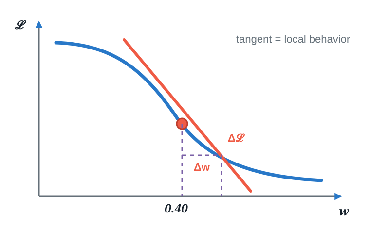
NEAR \(w=0.40\)
\[ \Delta\mathcal L \approx \frac{d\mathcal L}{dw}\,\Delta w \]
If \(\Delta w=+0.001\),
\[\Delta\mathcal L\approx(-4)(0.001)=-0.004\]
Local means near this value of \(w\)—not everywhere on the curve.
Connect the derivative to a tangent only after the numerical limiting process. Ask students to predict whether the loss moves up or down for a positive nudge. The tangent is a local linear model of the loss, not a global description.
Exercise · Read the local signal
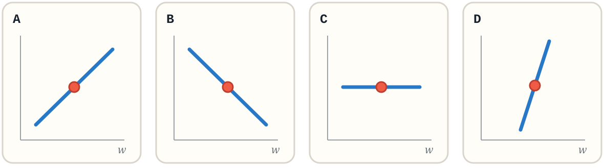
For each marked point, decide: is \(d\mathcal L/dw\) positive, negative, or zero—and where is its magnitude largest?
PAUSE90 secondsUse the tangent direction at the coral point.
Have students answer with hand signals: thumbs up, down, or flat for A–C, then identify D as the strongest sensitivity. Do not discuss parameter updates; the task is only to read what the derivative reveals locally.
Challenge · Can algebra reach the first node?
\[ \mathcal L(x)=\left[(x^2+1)^3-2\right]^2, \qquad x=1 \]
Compute the derivative of the final quantity with respect to the first one: \(d\mathcal L/dx\) at \(x=1\).
PAUSE2 minutesDifferentiate the nested expression using the chain rule you already know.
ALGEBRAIC SOLUTION
\[ \frac{d\mathcal L}{dx} =2\big[(x^2+1)^3-2\big]\;3(x^2+1)^2\;2x \]
\[ \left.\frac{d\mathcal L}{dx}\right|_{x=1} =2(6)\cdot3(2)^2\cdot2=288 \]
Give students a genuine attempt. They already know enough calculus to solve this expression algebraically. The purpose is not to make the derivative mysterious; it is to make the bookkeeping cost visible. Reveal 288, then ask what happens when the expression contains thousands of operations.
Correct—but the bookkeeping does not scale
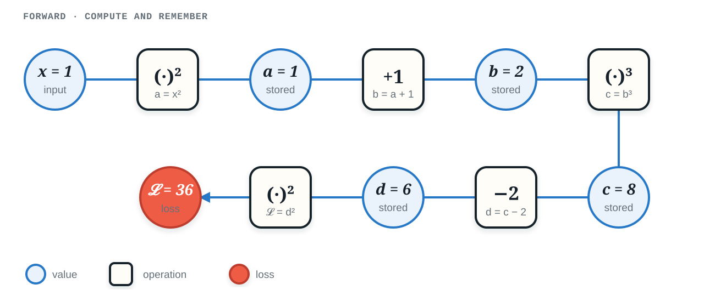
same expressionfive small operations · four remembered values
Read the graph left to right and have students supply each value before revealing it verbally. The variable names are bookkeeping: each operation now has one small input-output relationship that can be differentiated independently.
Each operation knows one derivative
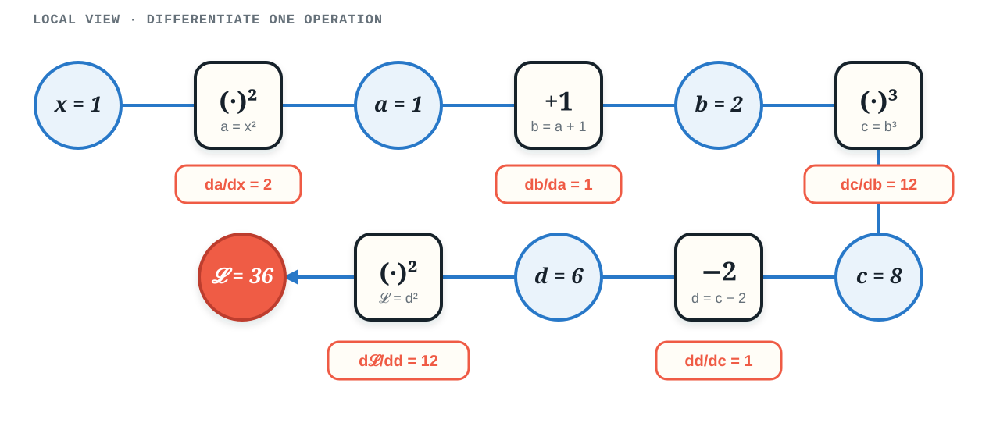
local viewEach operation differentiates only itself.
Reveal one local derivative at a time from left to right. Ask for the generic derivative first, then substitute the stored forward value. No node needs to know the entire expression or the final answer.
Backpropagation assembles the same answer
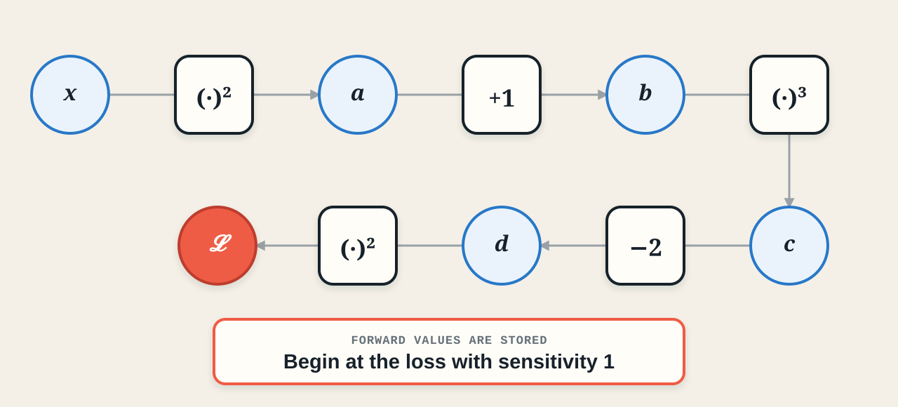
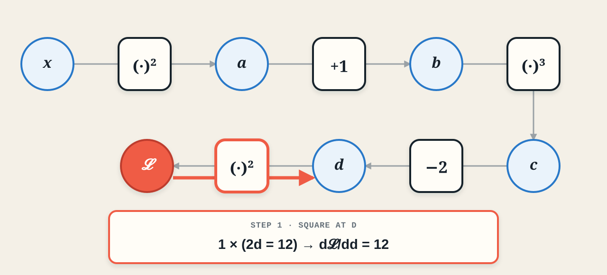
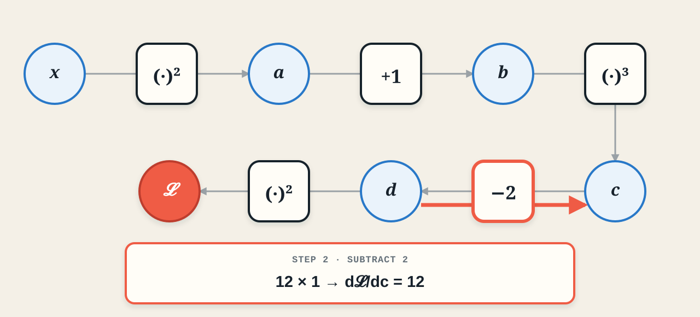
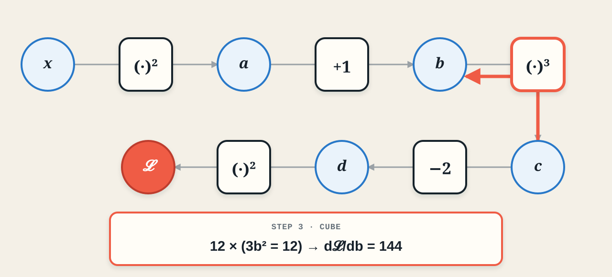
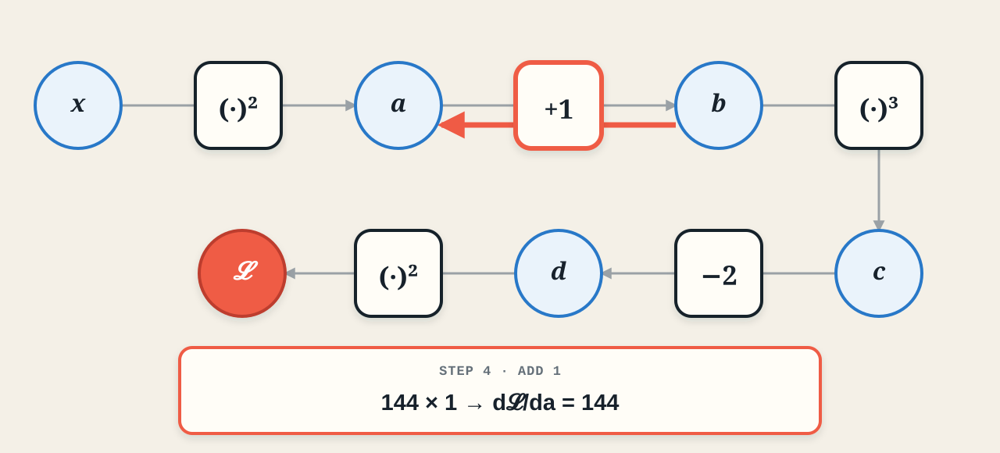
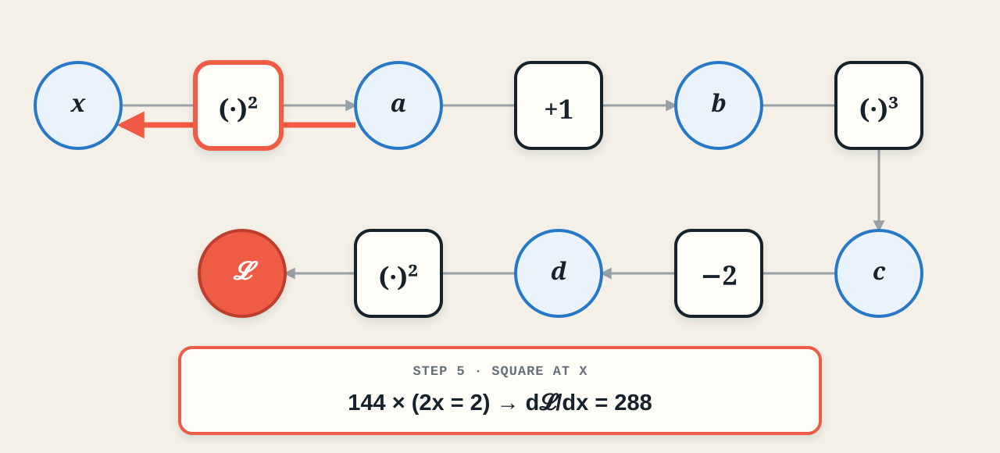
Advance through the five graph states. At each step, point first to the incoming sensitivity, then to the highlighted operation’s local derivative, and only then read the result in the external panel. The nodes remain uncluttered throughout. The final value 288 exactly matches the algebraic solution.
Exercise · Build a neuron’s graph
\[ z=wx+b,\qquad \hat y=\sigma(z),\qquad \mathcal L=\frac12(\hat y-y)^2 \]
\[ x=2,\qquad w=1,\qquad b=-1,\qquad y=1 \]
Draw the computation graph from the four inputs to the loss. Introduce an intermediate node whenever a new value is produced.
PAUSE2 minutesStart with the affine map, then follow the formula from left to right.
READY? Compare your graph on the next slide.
Do not let students differentiate yet. First check whether their graph has four leaves, an affine operation, a sigmoid operation, and a loss operation. This separates graph construction from gradient bookkeeping.
Worked solution · The forward graph
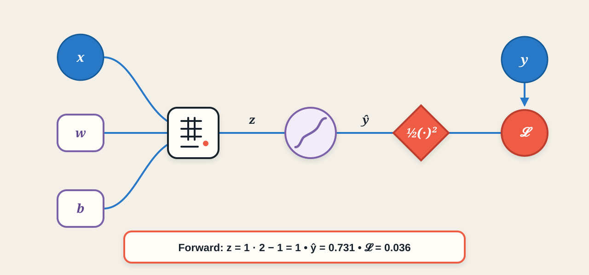
The values are stored. From which node must the backward pass begin?
Trace the forward values aloud: z equals 1, prediction equals 0.731, and loss equals 0.036. Then ask for the seed sensitivity at the loss. The answer is one.
Exercise · Send the credit backward
Compute \[ \frac{\partial\mathcal L}{\partial w},\qquad \frac{\partial\mathcal L}{\partial b},\qquad \frac{\partial\mathcal L}{\partial x}. \] Use incoming sensitivity × local derivative at every operation.
PAUSE3 minutesWork right to left. Keep the forward values available.
WORKED SOLUTION Advance once more and check one operation at a time.
Worked solution · Backpropagate
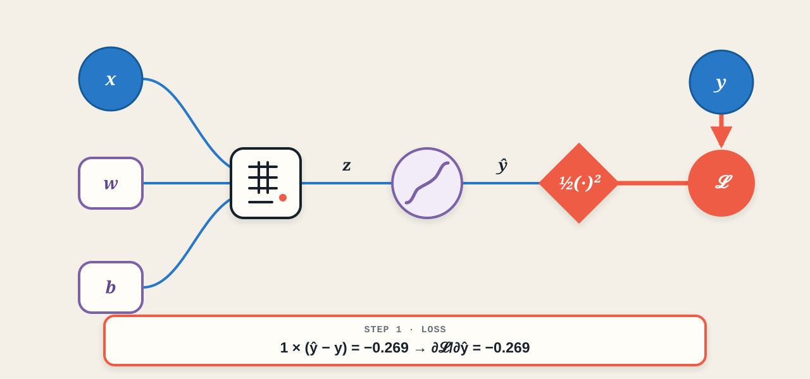
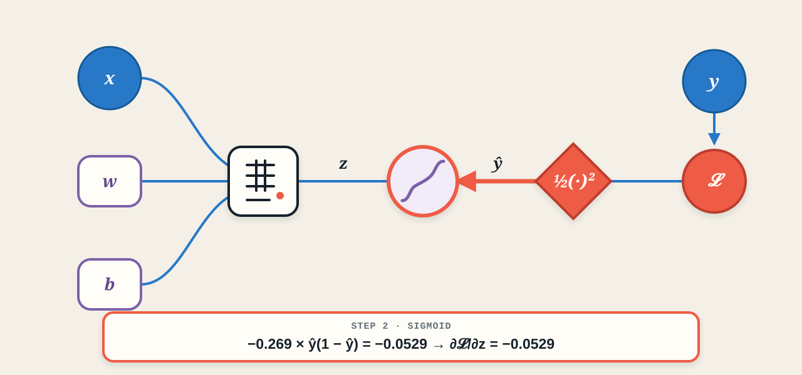
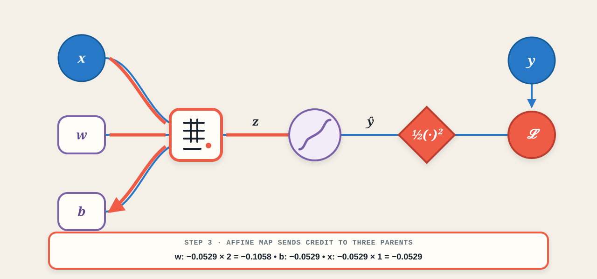
Reveal only one operation at a time. At the affine map, emphasize the new structural idea: one node receives an incoming sensitivity and sends a different gradient to each of its three parents. This prepares the multivariate section without introducing optimization.
03 · Multiple paths
One input reaches the result twice
GENERAL RULE
When \(f\) depends on \(x\) and \(y\), and both depend on \(t\): \[ \frac{df}{dt} =\frac{\partial f}{\partial x}\frac{dx}{dt} +\frac{\partial f}{\partial y}\frac{dy}{dt}. \]
CONCRETE EXAMPLE \[ f(x,y)=y+e^{xy},\qquad x(t)=\cos t,\qquad y(t)=t^2. \]
FOLLOW BOTH PATHS \[ \frac{df}{dt} =\underbrace{y e^{xy}}_{\partial f/\partial x}(-\sin t) +\underbrace{(1+x e^{xy})}_{\partial f/\partial y}(2t) \] \[ =-t^2e^{t^2\cos t}\sin t +2t\!\left(1+\cos t\,e^{t^2\cos t}\right). \]
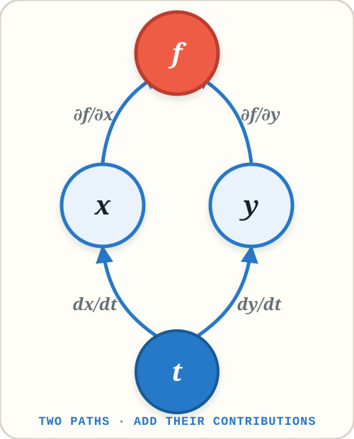
Keep the graph visible throughout. First trace the left path from t through x to f, then the right path through y. Ask whether the two effects should replace or reinforce one another before revealing the plus sign. In the example, compute the four local derivatives first and only then substitute x equals cosine t and y equals t squared.
Exercise · One weight, two paths
\[ \mathcal L_{\text{total}} =\underbrace{\frac12(\hat y-y)^2}_{\mathcal L_{\text{data}}} +\underbrace{\frac{\lambda}{2}w^2}_{\mathcal L_{\text{reg}}}, \qquad \lambda=0.1. \]
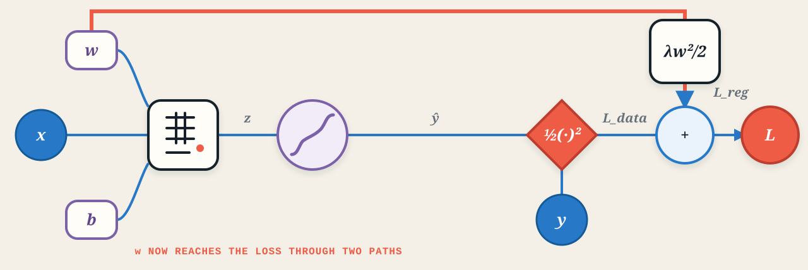
From the previous exercise: \[ \frac{\partial\mathcal L_{\text{data}}}{\partial w}=-0.1058, \qquad w=1. \]
How does regularization change \(\partial\mathcal L_{\text{total}}/\partial w\)?
PAUSE90 secondsFind the second path’s contribution, then add the two paths.
TWO PATHS · ONE GRADIENT \[ \frac{\partial\mathcal L_{\text{total}}}{\partial w} =-0.1058+\lambda w =-0.1058+0.1 =\boxed{-0.0058}. \]
Ask for the sign of the regularization contribution before computing it. The data term pushes w upward under gradient descent because its gradient is negative; the regularizer pushes w toward zero because its contribution is positive. The point here is path addition, not the optimization update itself.
Exercise · Open one linear neuron
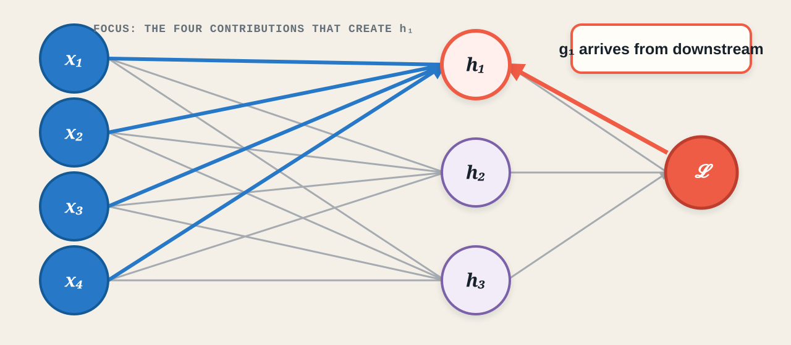
Given \(g_1=\partial\mathcal{L}/\partial h_1\), what messages should \(h_1\) send to its four weights, four inputs, and bias?
PAUSE90 secondsUse incoming gradient × local derivative. Start from the scalar equation for h₁.
The gray connections establish the full layer, but keep attention on the four blue edges into h1. The coral arrow is the gradient arriving from everything downstream. Students only need the scalar rule learned in the previous section.
One neuron sends three kinds of message
\[ h_1=w_{11}x_1+w_{12}x_2+w_{13}x_3+w_{14}x_4+b_1, \qquad g_1=\frac{\partial\mathcal{L}}{\partial h_1}. \]
TO EACH WEIGHT \[ \frac{\partial\mathcal{L}}{\partial w_{1j}} =g_1x_j \] The local derivative of \(h_1\) with respect to \(w_{1j}\) is \(x_j\).
TO EACH INPUT \[ \left.\frac{\partial\mathcal{L}}{\partial x_j}\right|_{h_1} =g_1w_{1j} \] This is only the contribution arriving through \(h_1\).
TO THE BIAS \[ \frac{\partial\mathcal{L}}{\partial b_1}=g_1 \] The local derivative of \(h_1\) with respect to \(b_1\) is \(1\).
The formulas differ only because each edge has a different local derivative.
Reveal weights, inputs, and bias separately. For each card, ask students to name the incoming message and the local derivative before reading the product. The vertical bar on the input gradient is important: h1 supplies only one of three path contributions.
Backpropagation is message passing
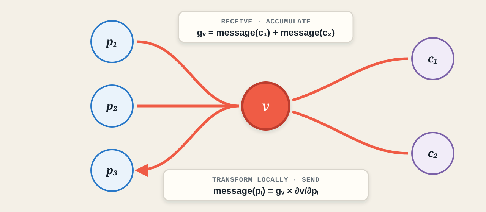
Receive and add messages from children. Multiply locally and send messages to parents.
Use family language carefully: parents produced v in the forward pass; children consumed v. Backpropagation reverses the direction. If several children used v, their messages add at v. The accumulated gradient is then multiplied by a different local derivative for each parent edge.
From three neurons to one linear-layer rule
\[ \mathbf h=W\mathbf x+\mathbf b, \qquad W\in\mathbb R^{3\times4}, \quad \mathbf x\in\mathbb R^4, \quad \mathbf g_h=\frac{\partial\mathcal{L}}{\partial\mathbf h}\in\mathbb R^3. \]
INPUT MESSAGES ADD \[ \boxed{\displaystyle \frac{\partial\mathcal{L}}{\partial\mathbf x}=W^\top\mathbf g_h} \] \(4\times3\) times \(3\times1\) gives one gradient for each input.
EVERY EDGE GETS A GRADIENT \[ \boxed{\displaystyle \frac{\partial\mathcal{L}}{\partial W}=\mathbf g_h\mathbf x^\top} \] \(3\times1\) times \(1\times4\) gives the full \(3\times4\) weight matrix.
EACH NEURON HAS ONE BIAS \[ \boxed{\displaystyle \frac{\partial\mathcal{L}}{\partial\mathbf b}=\mathbf g_h} \] The bias local derivative is one for every output neuron.
LINEAR LAYER · BACKWARD RULES TO REMEMBER
Transpose to inputs · outer product to weights · copy to bias
These are three forms of the same rule: incoming gradient × local derivative.
Check dimensions before interpreting the equations. W transpose appears because each input must collect one contribution from every output neuron. The weight gradient is an outer product because every output message pairs with every input value.
Restore the full two-layer network
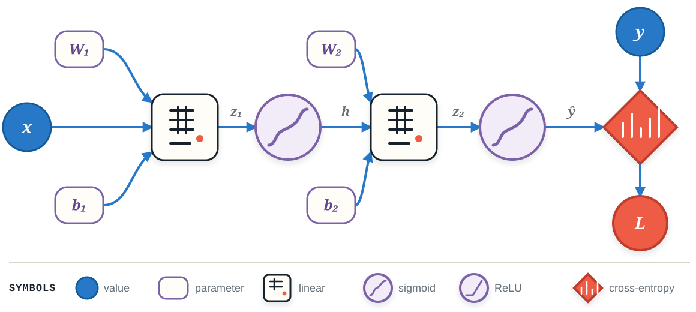
Every block receives a gradient message, applies its local rule, and sends new messages to its parents.
FULL WORKED DERIVATION Read online · Download PDF
First read the established graph from left to right, then trace the backward order from the loss to the first affine map. The linear blocks use the matrix rules just derived; sigmoid and BCE contribute their own local derivative rules. No block needs to know the entire network.
04 · Backward-rule toolbox
Core transformation blocks
LINEAR
FORWARD \[ \mathbf y=W\mathbf x+\mathbf b \]
BACKWARD MESSAGE \[ \mathbf g_x=W^\top\mathbf g_y \] \[ \nabla_W\mathcal L=\mathbf g_y\mathbf x^\top, \qquad \nabla_{\mathbf b}\mathcal L=\mathbf g_y \]
transpose · outer product · copy
SIGMOID
FORWARD \[ y=\sigma(x) \]
BACKWARD MESSAGE \[ g_x=g_y\,y(1-y) \]
gate by the stored output
TANH
FORWARD \[ y=\tanh(x) \]
BACKWARD MESSAGE \[ g_x=g_y(1-y^2) \]
one minus output squared
Reveal one card at a time. For every card, ask students to identify the stored forward value, the incoming message, and the local derivative. Linear is the only block here that sends three kinds of message; sigmoid and tanh are elementwise gates.
Gates, probabilities, and losses
RELU
FORWARD \[ y=\max(0,x) \]
BACKWARD MESSAGE \[ g_x=g_y\,\mathbf 1[x>0] \]
pass or block
SOFTMAX
FORWARD \[ p_i=\frac{e^{z_i}}{\sum_j e^{z_j}} \]
VECTOR–JACOBIAN PRODUCT \[ \mathbf g_z=\mathbf p\odot \left(\mathbf g_p-\mathbf p^\top\mathbf g_p\right) \]
the outputs interact
CROSS-ENTROPY
FORWARD \[ \mathcal L=-\sum_i y_i\log p_i \]
FUSED SHORTCUTS \[ \text{softmax + CE:}\quad \mathbf g_z=\mathbf p-\mathbf y \] \[ \text{sigmoid + BCE:}\quad g_z=\hat y-y \]
prediction minus target
Do not memorize six unrelated formulas. Identify the incoming message and multiply by the block’s local derivative.
ReLU is a hard gate. Softmax is different from the elementwise activations because changing one logit changes every output probability. End with the fused loss shortcuts: these are the expressions students will use most often in classifiers.
05 · Automatic differentiation
The same graph—now automatic
MICROGRAD · FORWARD
The answer is familiar. What did each Value have to remember for backward() to recover it?
Demonstration API: Karpathy’s micrograd
Run the forward lines first and ask what x and L contain. Reveal the backward call only after students predict its result. Micrograd is intentionally a black box in this lecture; students will build the box during the coding session.
Inspect the Value objects created by code
𝓛 = (xy + z)² Every operator returns a new Value.
2 · 3 · 10leaf∅no-op
60’*’{x, y}multiply backward
70‘+’{a, z}add backward
490’**2’{b}power backward
AFTER L.backward() L.grad = 1b.grad = 14a.grad = 14x.grad = 42y.grad = 28z.grad = 14
Execute the expression one line at a time. Each overloaded Python operator constructs and returns a new Value. Read each inspector row across: the forward result, initial gradient, operation label, parent references, and the operation-specific backward closure. Only after all rows are understood should L.backward be revealed.
What does backward() actually do?
THE LINE THAT MAKES BRANCHING WORK
+= adds contributions from every path.
Topological order guarantees that every child has sent its message before a node runs its local backward rule. Pause on plus-equals: assignment would erase a contribution whenever a value is reused in more than one place.
Coding session · Build the black box
x = Value(1.0)
a = x**2
b = a + 1
c = b**3
d = c - 2
L = d**2
L.backward()
assert x.grad == 288.0data, grad, parents, operation
In the lecture, Value was the tool. In the coding session, Value is the assignment.
This slide is the contract for the coding session. The students are not asked to use unexplained future machinery: they will implement the exact mechanism motivated by the lecture and verify it against a derivative they already trust.
06 · What gradients reveal
Read a gradient before using it
Sign
Which local direction raises the loss?
\(g_w<0\): increasing \(w\) locally lowers the loss.
\(g_w>0\): increasing \(w\) locally raises the loss.
Magnitude
How sensitive is the loss?
Large \(|g_w|\): a small change in \(w\) has a strong local effect.
Small \(|g_w|\): weak local sensitivity.
Near zero
A clue—not a diagnosis.The parameter may be locally irrelevant, a unit may be saturated, or several path contributions may cancel.
\(w_1\) has the strongest local influence; \(w_2\) is weakly sensitive; \(w_3\) requires investigation before we call it “unimportant.”
Ask students to interpret signs before magnitudes. Avoid converting the gradient into an update; that belongs to optimization. Emphasize that a zero gradient has several possible causes and must be interpreted using the graph and forward activations.
Read gradient flow across layers
Earlier layers still receive useful sensitivity.
Repeated small local derivatives can starve early layers.
Repeated large transformations can create unstable sensitivity.
input side
Gradients expose the symptom. Initialization, architecture, normalization, and optimization determine what we do about it later.
Read each set of bars from the loss side toward the input side. The diagrams are qualitative signatures rather than fixed numerical thresholds. This slide establishes diagnostic vocabulary; defer remedies to the relevant architecture and optimization lectures.
Backpropagation in five moves
loss.grad to 1.
THE WHOLE IDEA Receive messages · add them · apply the local rule · send messages to parents.
Value from scratchCoding session →
EXIT TICKET Why must a backward engine use parent.grad += ... rather than parent.grad = ...?
Reveal the five moves briskly and have the class speak the final memory sentence together. End with the exit ticket. The expected answer is that a parent can influence the loss through several children, so overwriting would discard all but one path contribution.